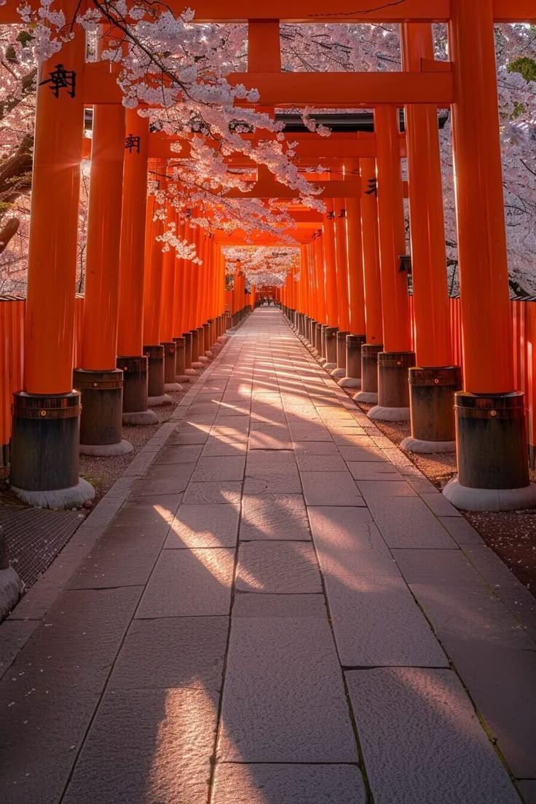
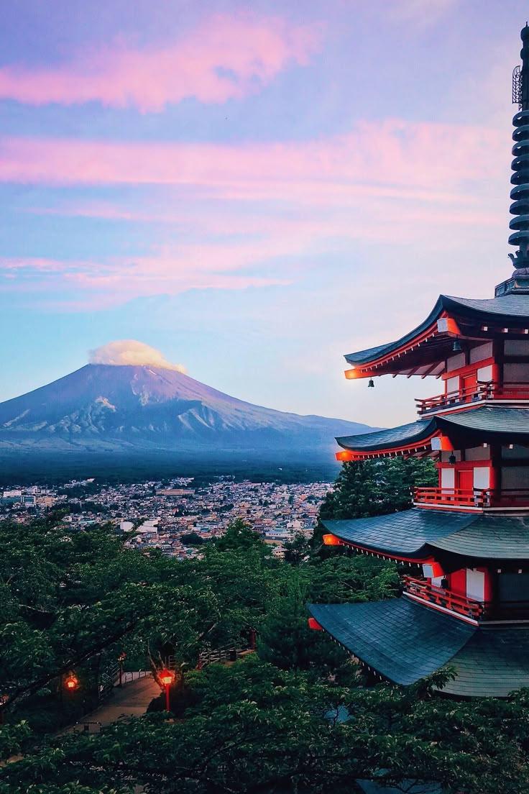
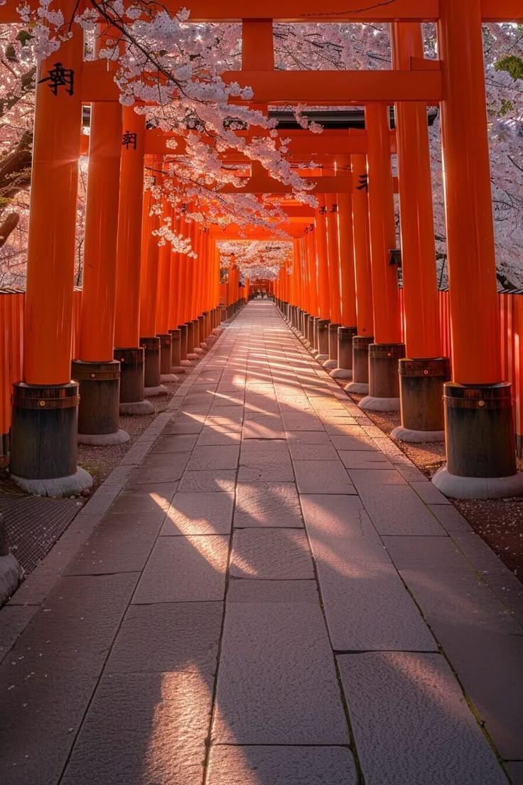
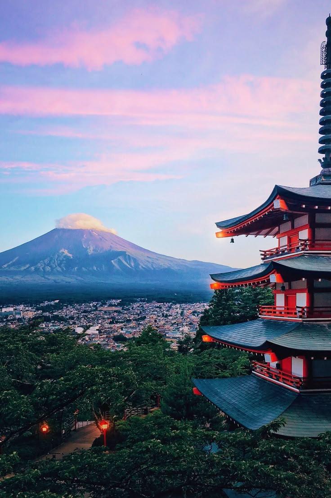
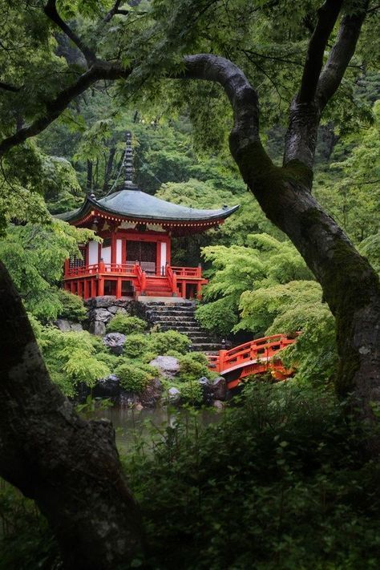
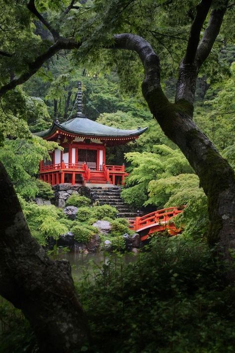
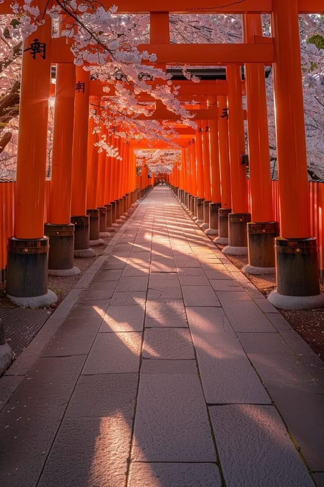
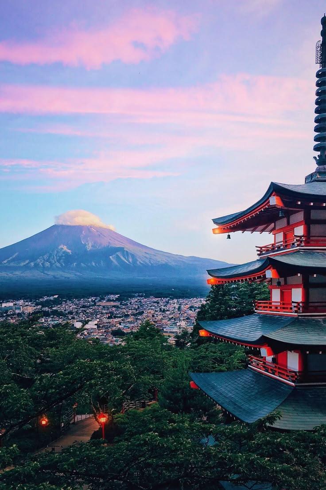
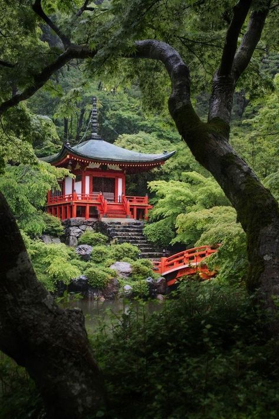

 

קיוטו היא אחת הערים העתיקות והמרהיבות ביפן, ששימשה במשך מאות שנים כבירת האימפריה היפנית. העיר ידועה במקדשים הבודהיסטיים והטוריים שלה, בגני הזן השקטים, ובטבע העוצמתי שמקיף אותה — במיוחד בעונת הסתיו והאביב, כשעלי השלכת או פריחת הדובדבן צובעים את העיר בגוונים קסומים. קיוטו משלבת בין מסורת עתיקה לבין חדשנות עדינה, והיא מקום מושלם למי שמחפש שלווה, תרבות ויופי יפני אמיתי.


